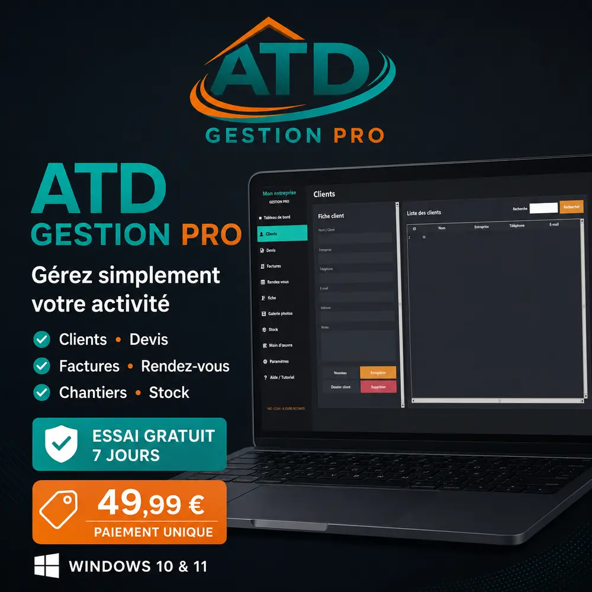

Gérez votre activité.
Pas votre paperasse.
Clients, devis, factures, rendez-vous, chantiers, photos et stock réunis dans un logiciel Windows simple et pensé pour le terrain.
Bonjour 👋
09:00 Pose mobilier
14:30 Visite chantier
Voyez ATD Gestion Pro avant de l'essayer
Une interface sombre et claire pour retrouver rapidement clients, devis, factures, rendez-vous, chantiers et stock.

L'essentiel pour piloter votre entreprise
Moins de fichiers éparpillés et moins de doubles saisies. Chaque information reste au bon endroit.
Clients & suivi
Coordonnées, notes, historique et rendez-vous dans une fiche claire.
Devis professionnels
Créez vos devis détaillés et suivez leur statut jusqu'à l'acceptation.
Factures & paiements
Éditez vos factures PDF et suivez les règlements.
Chantiers & rendez-vous
Organisez vos interventions et recevez vos rappels.
Stock & main-d'œuvre
Réutilisez vos articles, tarifs et prestations.
Photos & sauvegardes
Centralisez vos réalisations et protégez vos données.
Bien choisir et utiliser son logiciel de gestion
Des guides simples pour les artisans, indépendants et petites entreprises.
Logiciel devis et facture pour artisan
Les fonctions à vérifier pour créer des documents professionnels et suivre les règlements.
GUIDELogiciel de gestion artisan sur Windows
Pourquoi centraliser clients, rendez-vous, stock et documents sur un même ordinateur.
GUIDEOrganiser le suivi d'un chantier
Rendez-vous, photos, prestations et suivi client : une méthode claire pour ne rien oublier.
GUIDELogiciel de facturation artisan pas cher
Les critères pour choisir une solution complète, simple et économique sans abonnement mensuel.
MÉTIERDevis et factures pour plombier
Interventions, fournitures, acomptes et paiements regroupés sur Windows.
MÉTIERDevis et factures pour peintre
Surfaces, préparation, fournitures, photos et suivi de chantier.
MÉTIERDevis pour menuisier et agenceur
Matériaux, main-d'œuvre, mesures, photos et règlements.
MÉTIERDevis et factures pour électricien
Fournitures, main-d'œuvre, acomptes et interventions.
MÉTIERDevis et factures pour carreleur
Surfaces, préparation, matériaux et pose.
MÉTIERDevis et factures pour maçon
Matériaux, quantités, étapes et suivi de chantier.
MÉTIERGestion d'entreprise multiservice
Plusieurs prestations, un seul outil de gestion.
MÉTIERDevis et factures pour paysagiste
Entretiens, aménagements, photos et rendez-vous.
STATUTFacturation auto-entrepreneur artisan
Les fonctions essentielles pour démarrer simplement.
Un prix simple.
Sans abonnement.
Essayez toutes les fonctions pendant 7 jours, puis achetez uniquement si le logiciel vous convient.
- Clients, devis et factures
- Rendez-vous avec rappels
- Chantiers et galerie photos
- Stock et main-d'œuvre
- Sauvegarde et restauration